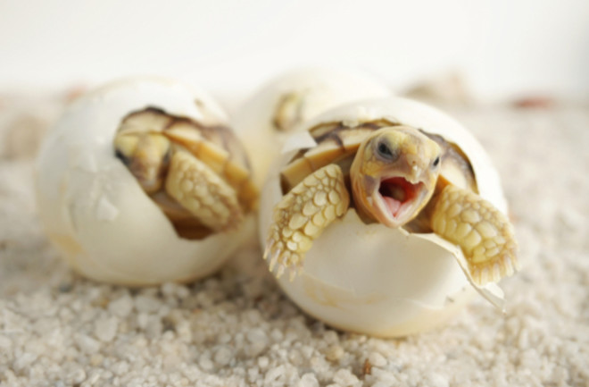
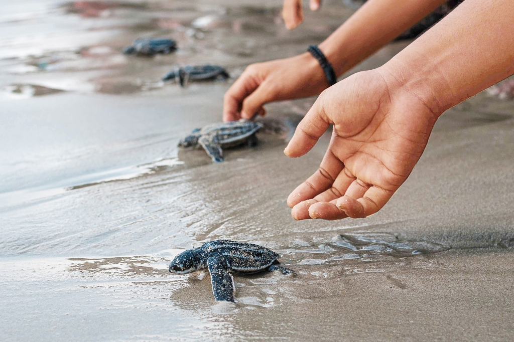

About turtles

Turtles are reptiles that have been living from more than 200 million years ago. Turtles are more attractive for their shell in the back.
This is a protective shell that protects them from the ocean predators. This can also be taken as a fact for them to live longer.
Turtle average weight is hundred pounds. Some turtles are aquatic, while others are terrestrial or semi-aquatic. Aquatic turtles are often
good swimmers and can hold their breath for several hours. Turtles are omnivores animals, they mostly tend to have small insects and
plants.
Many turtle species are threatened or endangered due to habitat loss, pollution, hunting, and the illegal pet trade.
Turtles have excellent eyesight and a keen sense of smell, which they use to locate food and navigate their environment.
Turtle Birth
Sea turtles hatch throughout the year but mostly in summer.Hatchlings use a carbuncle (temporary egg tooth) to help break open the shell.
After hatching, the young turtles may take 3 to 7 days to dig their way to the surface. Hatchlings usually wait until night to emerge from the nest.
Emerging at night reduces exposure to daytime predators. Studies have shown that some nests will produce hatchlings on more than one night.
For most sea turtle species, undisturbed nests can have more than 90% of the clutch successfully hatch. Nests disturbed by humans or animal
predators tend to have a 25% or even much lower success rate.
A "swim frenzy" of continuous swimming takes place for about 24 to 48 hours after the hatchling enters the water. This frantic activity
gets the young turtle into deeper water, where it is less vulnerable to predators. There have been reports of swimming hatchlings
diving straight down when birds and even airplanes appear overhead. This diving behavior may be a behavioral adaptation for avoiding predation by birds.
Turtle hatcheries in Srilanka
Sri lanka is a home for many turtles in the world. Due to the decrease in turtle population, there are many turtle hatcheries
located in srilanka in different parts of the country. Some of the main hatcheries are kosgoda turtle hatchery, Bentota turtle
hatchery, Rekawa turtle hatchery, Hikkaduwa turtle hatchery, and Induruwa turtle hatchery. The main target of these hatcheries are
to protect and do researches on these beautiful sea creatures.
The turtle hatcheries create a safer environment for turtles to lay their eggs because of the dogs, lizards and birds that are
trying to eat them. Therefore Sri Lankan turtle hatcheries located in many different areas around the country plays a very
important role.